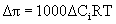

Introduction
|
Filtration is a process in which a solution, either liquid or gas, is forced to flow through a medium that is impermeable to the solute or suspended solids in the solution. The purpose of filtration is to purify the solvent and remove the solute or suspended solids. There is a difference between a filter and a membrane. A filter separates two or more substances physically by allowing smaller compounds to pass through, while rejecting, or disallowing, larger sized compounds from passing through. The material that flows through the filter is called the permeate, while the material that collects or is retained on the filter is called the retentate. Filtration is a physical separation process based on size. In fact, as the filter gets dirty (where the retentate builds up on the filter), performance actually improves. This improvement is because the compounds stuck on the filter become part of the filtration process and they help trap additional particles and prevent them from passing through the filter. Filters are also rated in an absolute manner, meaning that everything greater in physical size than the pore size of the filter will be rejected. A membrane, however, typically separates two or more substances both chemically and physically. The chemical filtration is preformed via concentration gradients. Also, as the membrane gets dirty, the separation efficiency is reduced, which is in direct contrast to a filter. As a layer of contaminants builds up on the membrane, their concentration increases, and more contaminants pass through the membrane. This phenomenon is commonly referred to as “concentration polarization.” |
Filtration systems generally use semi-permeable filters or membranes. The filter can be more porous when filtering solids out of solution and can also be permeable to some liquids and not others. Oil and water, for example, can be separated by a membrane that is soluble to one but insoluble to the other. With conventional filtration, the solvent flows through the filter due to an applied pressure drop. In this case, the solids or solute cakes onto the membrane, eventually blocking flow through the membrane and this is called dead-end filtration. Everyday coffee filters are examples of this type of operation. Coffee presses (see Figure 1) separate coffee from the coffee grounds by pushing the filter screen through the solution. Here the grounds are retained below the screen while the coffee passes through. |
|
An alternative filtration process, termed cross-flow filtration, prevents this cake buildup and subsequent reduction in flow. Here, the feed solution is directed parallel to the membrane. In cross-flow filtration, only a fraction of the solvent flows through the membrane due to an applied pressure differential across the membrane. The remainder flows out of the filter assembly along with the solute. This method reduces cake formation and membrane fouling due to the larger solvent flow out of the system as compared to the flow through the membrane as shown in Figure 2. The bulk flow across the membrane surface helps sweep away any material that gets trapped on the membrane surface. |
Figure 2.
Cross-Flow Filtration
|
Filtration
processes are designated by the
size of the particle retained by the membrane.
A typical Filtration Spectrum developed by Osmonics is shown in Figure
3
(General Electric, 2005). This chart is
useful in determining what type of process is needed to remove a given
material. When the molecular weight of
the solute is low or removal of ionic species is desired, reverse
osmosis
processes are preferred. |
Figure
3.
Filtration Spectrum (General Electric)
Osmosis
|
Before going into details on the reverse osmosis process, it is helpful to first describe osmosis. The osmotic pressure of a solution is a colligative property, thus it depends only on the concentration of solutes in solution, not their type. Solutes that dissociate (split into ions such as sodium chloride) produce solutions with higher osmotic pressure compared to solutes that do not dissociate (i.e. sugar molecules) because of the increased number of solute particles produced. The osmotic pressure, π, in atmospheres of solution can be found from Van’t Hoffs Equation: |
|
|
(1)
|
where Ci is the total molar concentration of all solute ions/molecules in solution (mol/L) R is the gas constant (0.08206 L-atm/mol-K) T is the absolute Temperature (K) |
|
When solutions with different osmotic pressures are separated by a semi-permeable membrane, solvent will diffuse from the less concentrated solution to the more concentrated solution. This process is called osmosis. During osmosis, solvent flows from regions of high activity or potential (pure solvent) to regions of low activity (the side with a greater amount of dissolved solute particles). The solvent activities are used to describe osmotic pressure because the membrane prevents solute flow. Everyday examples of osmosis include pickling (water flowing from a cucumber into a concentrated brine solution) and watching a raisin expand when placed in clean tap water. This is also the reason why it is unhealthy to drink seawater. The ions present in salt water are more concentrated than the ions and particles in your blood stream, thus water flows from the blood into your intestines, resulting in severe dehydration. When two solutions are separated by a semi-permeable (osmotic) membrane, the differential osmotic pressure (Dp) can be determined by: |
|
 |
(2)
|
where DCi is the difference in the total molar concentration of solute ions/molecules on each side of the membrane. It is important to realize that the specific types of ions are not important, but the number is important. When a semi-permeable membrane separates pure solvent from a concentrated solution in a U-tube, as depicted in Figure 4a, solvent flows from the pure solvent side across the membrane to the solution side. This flow of solvent raises the liquid level on the solution side of the U-Tube (Figure 4b). Eventually, the spontaneous flow of solvent through the membrane stops due to the hydrostatic pressure head exerted by the column of liquid on the solution side (Figure 4c). |
Figure 4 Osmotic Flow in a U-tube
|
Measurement of the hydrostatic pressure head provides an alternate method of determining the osmotic pressure of a solution, assuming the densities of the pure solvent and solution mixture are about the same: |
|
|
(3)
|
where r is the solution density (kg/m3), g is acceleration of gravity (9.8 m/s2) and H is the hydrostatic pressure head (m). Equation (3) calculates the osmotic pressure in Pascal’s (N/m2).
To
purify water, i.e. make the water flow from
the salt solution to the pure-water side, a pressure must be exerted on
the
salt solution that exceeds the osmotic pressure (Δπ).
When this is the case, the membrane acts as a filter and this process
is
called reverse osmosis. Reverse osmosis is
depicted in Figure 5. |
Figure
5.
Reverse Osmosis
|
A good rule of thumb for the osmotic pressure of fresh or brackish water is approximately 1 psi for every 100-mg/L difference in total dissolved solids (TDS) concentration on opposing sides of the membrane. RO processes use a semi-permeable membrane, which is impermeable to solutes and solvated ions but allows water to pass through. Solvated ions are nothing more than a positive or negative ion surrounded by water molecules as depicted in Figure 6. The physical size of the additional water molecules prevents the ions from passing through the membrane. |

Figure 6. Solvated Sodium and Chlorine Ions
|
RO is a percent rejection technology in that the quality of the water produced depends on the quality of the feed water. For example, if a feed solution contains 4% contamination and passes through a membrane that rejects 99% of the contamination (i.e. prevents it from passing through the membrane), the residual contamination within the filtrate will be only 0.04%. If this solution is then passed through a second RO system, the final product will contain only 0.0004% contamination. Factors that affect membrane performance in RO systems include Pressure, pH, Temperature, Turbidity, Langlier Saturation Index, and Silt Density Index. As
previously mentioned, the driving force for
flow across a semi-permeable membrane is a difference in the activity
of the
solutions on each side of the membrane and is proportional to the
difference
between the applied pressure differential across the membrane and
osmotic
pressures of each the two solutions. The
performance of an RO membrane is typically expressed in terms of the
permeate flux and salt
rejection. Salt rejection
is typically defined as the percentage of salt held back by the
membrane. The
diffusion-based mass flux of water across the membrane is (McCabe, et
al.,
2005): |
|
|
(4)
|
where Kw is the solvent permeation coefficients and z is the membrane thickness. When Kw has units of g-m-1s-1Pa-1 and the membrane thickness is measured in meters, the resultant solvent flux through the membrane has units of g/m2s . The molar flux of solute through the membrane has a similar form where Ks is the solute permeability coefficient with units of gm-2m-1: |
|
|
(5)
|
Equations 4 and 5 predict a linear increase if there are solvent flux with increasing pressure and a solute flux independent of pressure. Both fluxes decrease with increasing membrane thickness. The derivation of the permeation coefficients are presented in the Theory Section, below. If the membrane is working correctly, Ks should be a very small number. RO systems can remove up to 99% of dissolved minerals, up to 97% of dissolved organics, and more than 98% of biological and colloidal matter (DeGenova, 2001). Overall, separation is based on osmotic pressure differences across the membrane and on the size of the compounds. The typical range of molecular weight cutoff levels is less than 100 Daltons for RO membranes. Certain pesticides, for example, can pass through the membrane. Also some dissolved gases can pass through the membrane such as hydrogen sulfide, which is commonly attributed to a rotten egg smell. During operation, solute particles (ions and molecules) will build up at the membrane surface resulting in a non-uniform concentration in the solution. This phenomenon is called concentration polarization. Concentration polarization reduces the overall flux of water through the membrane due to an increase in localized osmotic pressure reducing the driving force. It also reduces the solute rejection efficiency, resulting in increased solute flow through the membrane.
Dual
pass RO is sometimes used to increase
separation efficiency. Here, two RO
units (passes) operate in series. Reject from the first pass is
typically
discharged; reject from the second pass is typically of a higher
quality and is
recycled back to the first RO system.
Figure 7 illustrates a hypothetical dual pass reverse osmosis
system. Note that RO units can be used
immediately after each other, or as shown in Figure 7, additional
processes can
be located between the RO units. |
Figure 7. Dual Pass RO Unit
|
In commercial RO systems, banks of RO units can operate in parallel for each pass to increase the total system throughput. This system works in the same way as a dual pass system to increase the total quality of the water as well as the quantity. A typical block flow diagram showing the first pass of a RO system is depicted in Figure 8. The arrows show that the water that does not pass through the system is recycled back to the previous module or sent out of the system. The water is sometimes heated prior to RO. This improves the hydraulic performance, allowing increased permeate flow but also increasing the contaminant flux. Chemical pretreatment upstream of the RO typically includes acid injection for pH control and a reducing agent such as bisulfite or activated carbon filtration for chlorine removal. Antiscalant is also added to prevent precipitation and fouling on the RO membranes. |
Figure 8. Multi-pass Reverse Osmosis System
|
RO operating specifications depend on a variety of factors, including feed water quality and specific contaminants, as well as the amount and quality of the product water needed. The typical operating pressure for RO ranges from 50 bar for household use to approximately 1,000 bar for seawater purification as shown in Table 1. |
Table 1. Typical RO Operating Pressures
|
|
|
|
RO – Seawater |
800 – 1000 psi |
|
RO – Waste and Process |
300 – 600 psi |
|
RO – Water Purification |
200 – 350 psi |
|
RO – Undersink (household use) |
50 psi |
|
Reverse Osmosis membranes have
been
optimized for these applications. In
addition to contaminant removal requirements, membranes are classified
according to system pressure, as shown in Table 2. |
Table 2. Membrane Pressures
|
|
|
|
|
Normal Operating Pressure |
|
High |
40 kg/cm2 or higher (39 bar) |
|
Medium |
30 kg/cm2 (29 bar) |
|
Low |
15 kg/cm2 (14.7 bar) |
|
Ultralow |
10 kg/cm2 (9.8 bar) |